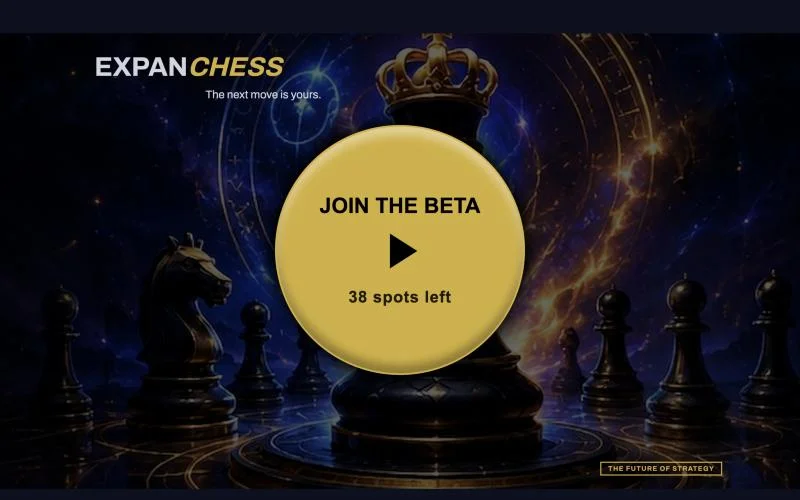
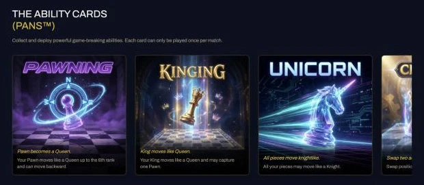

Expanchess
A browser chess game that adds one-use ability cards, called Pans, to classic chess. I've worked on it for the past year as part of a small startup team.
- My role
- Game development contractor, remote
- Team
- Small startup team
- Timeline
- 2025 to now
- Areas
- Design, UI/UX, monetization, product, automation
- Status
- Closed beta done. expanchess.com

The game
Expanchess keeps the rules of chess and adds ability cards, called Pans. Each Pan can be played once per match: a Pawn that moves like a Queen up to the sixth rank, a King that moves like a Queen and can capture a Pawn, every piece moving like a Knight for a turn.

The project was crowdfunded at 138%, verified by a grandmaster, and tested in more than 1,000 playtest games. It runs in the browser with no download, and it's built to work on phones.
My work
On a small team everyone covers more than one job. Mine has been:
- Game design. Improving the rules and the player experience through rounds of design feedback.
- UI and UX. Working on how the game and its cards are presented and played.
- Monetization and product. Planning how the game makes money and what goes on the roadmap: open beta, anonymous play, matchmaking and a bot, then a visual upgrade.
- Automation. Building process automations that cut manual work and running costs.
Most of this work is internal to the company, so this page only covers what's public. I'm happy to talk through my process and decisions in an interview.